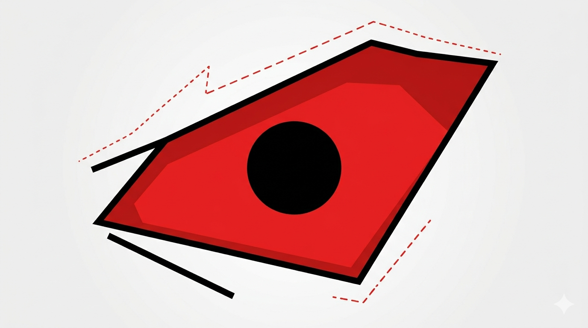
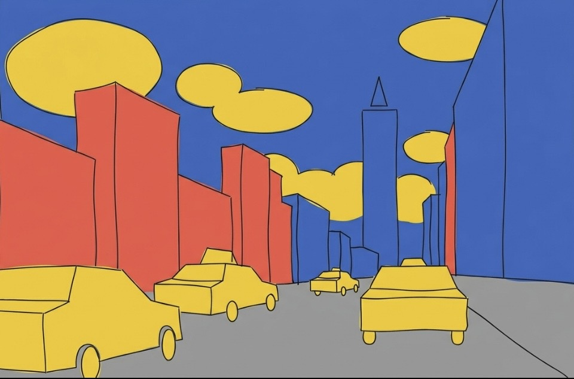

For this assignment, I created an expressive eye illustration using only basic shapes and a limited color system. I built the eye using two main shape types and kept the design focused on two complementary colors to push contrast and emotion. I chose an emotion and exaggerated the scale so the eye fills most of the artboard, making the expression readable even at a glance. I also organized my Illustrator file by naming layers and sublayers clearly, so it is easy to understand what each part of the eye does (iris, pupil, eyelid, highlight, etc.). I used the grid, rulers, and smart guides to keep edges aligned and curves intentional. After finishing, I exported the artwork as a PNG for the web.

For this assignment, I created an illustrated version of a real-world environment based on a photograph of a New York City street. To build the vector shapes manually and avoid automated tracing tools, I imported the original photograph and locked it in its own template layer. I used a triadic color palette consisting of cobalt blue, coral pink, and mustard yellow, referencing Adobe Color CC to establish a cohesive, limited color scheme. I managed the depth of the composition by separating the artwork into distinct layers for the foreground, middle ground, and background, which are clearly visible in the application's Layers panel. All shapes were built from scratch using various tools in Adobe Illustrator to demonstrate my proficiency. Finally, I exported the finished illustration as a 1920x1080 PNG file optimized for the web.
